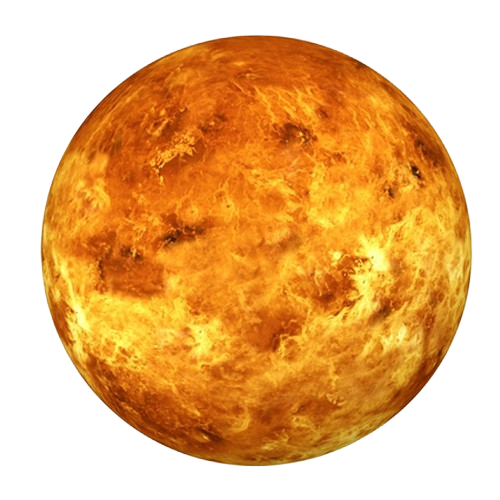

VÊNUS
Vênus, o segundo planeta do nosso sistema solar a partir do Sol, é uma esfera rochosa semelhante à Terra em termos de tamanho e composição. No entanto, apesar dessas semelhanças, Vênus é frequentemente referido como o "gêmeo malvado" da Terra devido às suas condições extremas e inóspitas.
